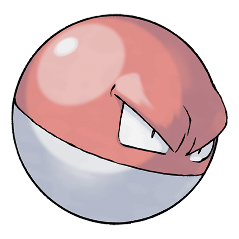

Você conseguiu o tipo Elétrico!
Elétrico é o elemento da energia, da agilidade e da inovação. Treinadores desse tipo costumam ser rápidos para pensar e agir, adaptando-se facilmente às mudanças.
Cheios de entusiasmo e determinação, gostam de enfrentar desafios de forma criativa e surpreender seus adversários com suas ideias e velocidade.
Pokémons sugeridos:

Pikachu nº0025
Pokémon do tipo Elétrico com aparência de um pequeno roedor amarelo. Alegre e corajoso, armazena eletricidade em suas bochechas e a libera em poderosos ataques durante as batalhas.

Voltorb nº0100
Pokémon do tipo Elétrico que se parece com uma Poké Bola. Conhecido por sua grande quantidade de energia, pode liberar descargas elétricas repentinas quando se sente ameaçado.

Elekid nº0239
Pokémon do tipo Elétrico com aparência infantil e muita energia. Adora brincar e correr, gerando eletricidade constantemente para fortalecer seus ataques e impressionar seus adversários.